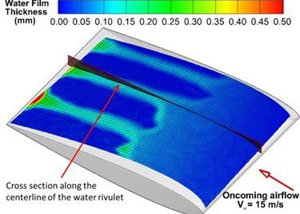
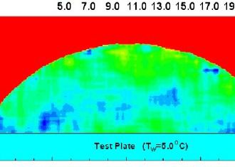
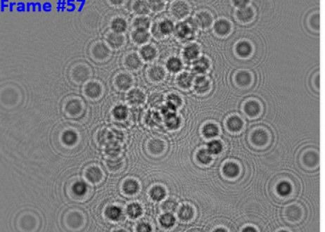
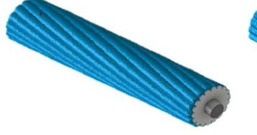
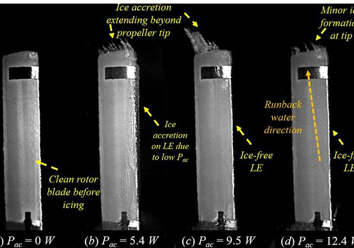
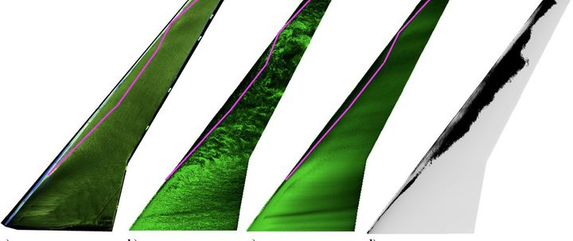
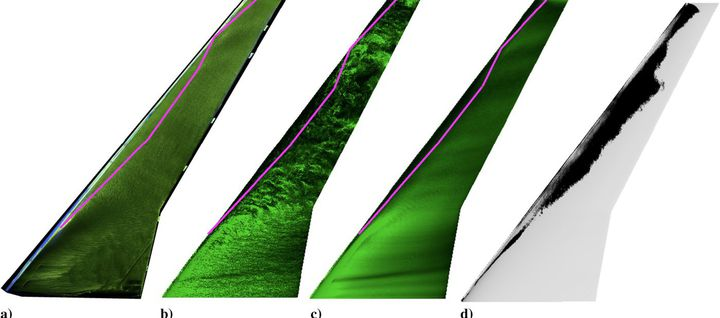
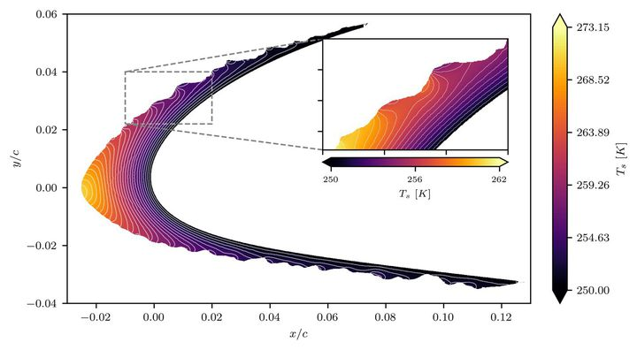
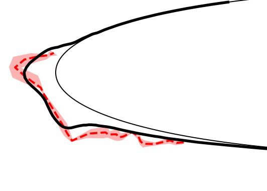
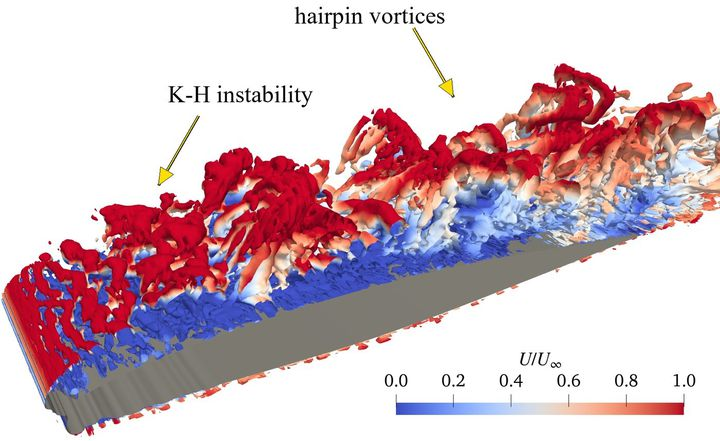

Explore the archive
27 records across six collections: icing-tunnel and rotor experiments, UAV flight campaigns, validated simulations, and linked external records. Every record is in curation for a planned FROST release.

Rime and glaze ice on a high-lift UAV wing (S1223)
Ice grown on an S1223 UAV wing in the ISU-IRT, laser-scanned, 3D-printed, and re-tested for loads, surface pressure, and PIV. Two independent simulations of the same scanned shape complete the region PIV cannot see.

Transient ice accretion over an airfoil: high-speed imaging
High-speed imaging that resolves how rime and glaze ice grow over an airfoil leading edge in the ISU-IRT, frame by frame.

3D laser-scanned ice shapes
Laser scans of accreted ice on airfoils, wings, rotor blades, and fans, including time-resolved growth sequences: the training target for ice-shape generation.

Wind-driven runback films and rivulets (DIP)
Digital Image Projection measurements of the thickness of wind-driven water films and rivulets that run back over airfoil surfaces before they freeze.

Freezing of impinging droplets: molecular tagging thermometry
Lifetime-based molecular tagging thermometry that maps transient temperature inside small water droplets as they impinge, cool, and freeze.

Cloud droplets by digital inline holography
A digital inline holographic system that measures the size and statistics of airborne supercooled droplets in the icing tunnel.
Pitot-probe icing and protection
Dynamic icing of Pitot probes, the airspeed sensors that iced shut during the UAV flight campaigns, with and without an electro-thermal/superhydrophobic protection strategy.

Superhydrophobic, icephobic, and slippery coatings
Side-by-side icing tests of surface coatings on airfoils and propellers: how wettability changes runback, ice coverage, and adhesion.

Icing of power conductors and bridge stay cables
Dynamic ice accretion on twisted power-transmission conductors, bundled conductors, and bridge stay cables, with and without surface treatments.

Dynamic icing on rotating UAV propellers
Ice accretion and shedding on rotating UAV propeller blades, from clean blade to 'lobster-tail' glaze ice, with 3D scans of the iced blades.

Aerodynamic penalty of iced propellers
Thrust, power, and phase-locked PIV of the wake behind iced propellers, linking ice shape to performance loss.

Ice on rotating aero-engine fans and spinners
Ice accretion on rotating fan blades and spinners, the components behind engine operability limits and certification testing.

DBD plasma anti-icing on airfoils and rotor blades
Dielectric barrier discharge plasma actuators as an icing-mitigation strategy: discharge imaging, IR temperature maps, and ice coverage across voltages.

Thermal ice protection: rotor heating and hot-air systems
Rotor-integrated heating for propellers and hot-air systems for engine inlet guide vanes: heating power against ice coverage and runback refreezing.
UAV in-flight icing campaigns
Fixed-wing and quadcopter UAVs flown into natural icing. In one mission the aircraft drew over 80% more power in an icing loiter while its Pitot ports iced shut.
Wall-modeled LES of NACA 23012 with laser-scanned ice
Wall-modeled LES of an airfoil carrying five laser-scanned IRT ice shapes, validated against tunnel loads and surface pressure.

Rough-wall modeling for LES of rime-iced airfoils
A rough-wall model for LES over scanned rime roughness that removes most of the lift and drag error of smooth-wall simulation.

CRM65 swept wing with real and artificial ice (LES)
LES of a swept wing with real scanned ice and with artificial ice shapes, showing where artificial shapes mislead drag predictions.

Conjugate heat transfer over scanned ice roughness (LES)
LES of heat transfer in boundary layers over laser-scanned ice roughness, coupled to the solid, and compared with IR thermography.
Droplet impingement on clean and scanned ice (LES)
Lagrangian-particle LES of droplet impingement, including supercooled large droplets, on clean and laser-scanned iced surfaces: collection efficiency on rough ice, which tunnels cannot measure directly.
High-order GPU LES of the rime-iced S1223
Discontinuous-Galerkin LES of the scanned S1223 ice on a single GPU, resolving the region below the wing that PIV cannot see. Free-air, preliminary.

Ice-accretion ensembles for NASA IRT runs 401–405
An agent-developed 3D ice-accretion model run in ensembles on the five NASA IRT reference cases, with no fitted coefficients.

IDDES of a glaze-iced GLC305 airfoil, analyzed by agents
An IDDES of a glaze-iced airfoil whose Kelvin–Helmholtz and hairpin vortices were labeled by PhysMiner agents, separating shear from true rotation.
Wind-driven water-film simulations
Numerical simulations of thin wind-driven water films over solid surfaces, paired with icing-tunnel measurements and field-inversion machine learning.
RANS of every scanned S1223 ice shape
An external RANS of each S1223 scan, linked to the same FROST record as the tunnel run and the ISU LES.

NASA IRT runs 401–405 (NACA 0012)
The classic NASA Lewis IRT icing test on a NACA 0012 airfoil, with repeat runs. FROST links it as the reference for its ice-accretion benchmark.
NASA IceVal DatAssistant
NASA's interactive, automated icing-data management system. More than 800 NASA ice shapes exist, many originally stored as hardcopy; FROST will link to these records.